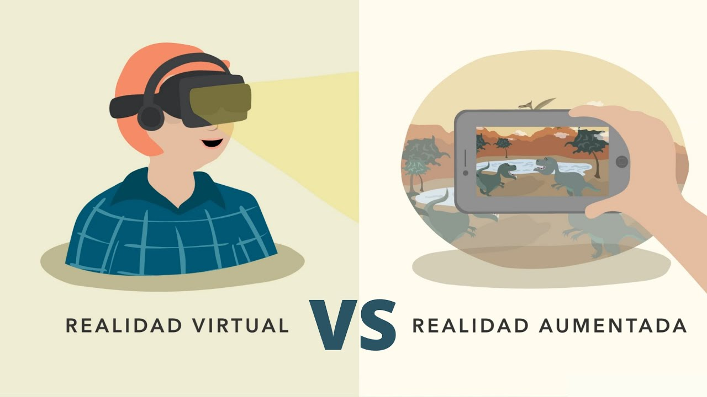
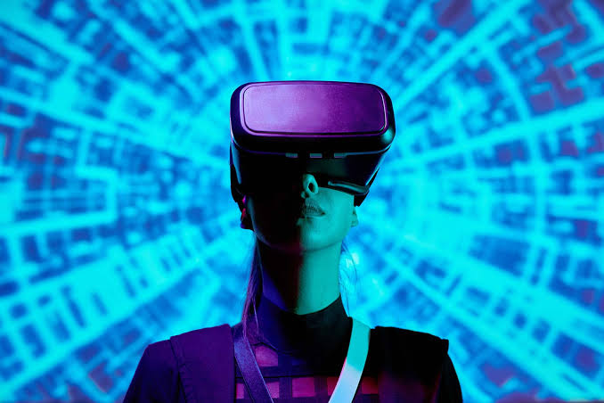

Introduccion:
La realidad virtual (VR) y la realidad aumentada (AR) son tecnologías que han revolucionado la forma en que interactuamos con el mundo digital. La VR sumerge al usuario en un entorno completamente virtual, mientras que la AR superpone elementos digitales en el mundo real. Ambas tecnologías tienen aplicaciones en diversos campos, desde el entretenimiento hasta la educación y la medicina.
La realidad virtual y la realidad aumentada no se inventaron en un solo momento, sino que evolucionaron a través de varios hitos históricos fundamentales. El primer dispositivo físico considerado el antecesor de ambas tecnologías fue creado en 1968 por el científico informático estadounidense Ivan Sutherland y su alumno Bob Sproull. Se trató de un pesado casco digital conectado a una computadora bautizado como "La Espada de Damocles".
Mucha gente suele pensar que la realidad virtual y la realidad aumentada son tecnologías similares, pero en realidad tienen aplicaciones distintas y ofrecen experiencias únicas.
Aca te vamos a explicar cada una y sus funcionamientos:

Funcionamiento:
La realidad virtual (VR) funciona mediante el uso de dispositivos como cascos o gafas especiales que cubren completamente la visión del usuario, creando un entorno digital inmersivo. Estos dispositivos suelen estar equipados con sensores de movimiento y controladores que permiten al usuario interactuar con el entorno virtual. La VR se utiliza en videojuegos, simulaciones de entrenamiento, y experiencias educativas, entre otros.
Por otro lado, la realidad aumentada (AR) funciona superponiendo elementos digitales en el mundo real a través de dispositivos como smartphones, tabletas o gafas AR. La AR utiliza cámaras y sensores para detectar el entorno físico y añadir información digital relevante. Esta tecnología se aplica en aplicaciones móviles, publicidad interactiva, y herramientas de diseño, entre otros.
Como se puede ver, ambas tecnologias son bastante diferentes en su funcionamiento y aplicaciones, por eso ahora vamos a ver unas curiosidades:
Curiosidades de la Realidad virtual
- La realidad virtual es más antigua de lo que parece. En los años 60 ya existían sistemas experimentales.
- Los visores de RV engañan al cerebro mostrando una imagen ligeramente diferente para cada ojo.
- La realidad virtual puede provocar mareos porque los ojos y el oído interno reciben señales diferentes.
- No solo se utiliza para videojuegos: también sirve para entrenar a pilotos, médicos y bomberos.
- Algunas experiencias de RV pueden hacer que una persona sienta que un avatar virtual es su propio cuerpo.

Curiosidades de la Realidad aumentada
- La realidad aumentada no reemplaza el mundo real, sino que añade elementos digitales sobre él.
- Muchos teléfonos celulares pueden utilizar realidad aumentada mediante la cámara y sus sensores.
- Los filtros de redes sociales son un ejemplo de realidad aumentada.
- La RA puede utilizarse para ayudar a técnicos a reparar máquinas mostrando instrucciones digitales.
- También puede utilizarse en educación para visualizar modelos 3D de órganos, planetas y otros elementos.
Comparaciones:
| Característica | Realidad Virtual (RV) | Realidad Aumentada (RA) |
|---|---|---|
| Definición | Crea un mundo completamente virtual. | Añade elementos digitales al mundo real. |
| Uso de dispositivos | Generalmente necesita gafas o visores de RV. | Puede utilizar teléfonos, tablets o gafas de RA. |
| Entorno | Reemplaza el entorno real por uno virtual. | Mantiene visible el entorno real. |
| Inmersión | Alta inmersión. | Inmersión parcial. |
| Ejemplos | Videojuegos, simuladores y entrenamiento. | Filtros, mapas, educación y aplicaciones de diseño. |
| Objetivo principal | Transportar al usuario a un entorno virtual. | Mejorar la percepción del mundo real con información digital. |
Conclusion
En conclusión, la realidad virtual y la realidad aumentada son tecnologías innovadoras que están cambiando la forma en que interactuamos con la tecnología y nuestro entorno. Aunque la realidad virtual nos introduce en un mundo completamente digital, la realidad aumentada combina el mundo real con elementos virtuales. Ambas tienen aplicaciones en áreas como la educación, los videojuegos, la medicina, el entrenamiento y el trabajo. Con el avance de la tecnología, es probable que estas herramientas se vuelvan cada vez más comunes y útiles en nuestra vida cotidiana.
↑
Mas informacion sobre la realidad virtual
Mas informacionMas informacion sobre la realidad aumentada
Mas informacion